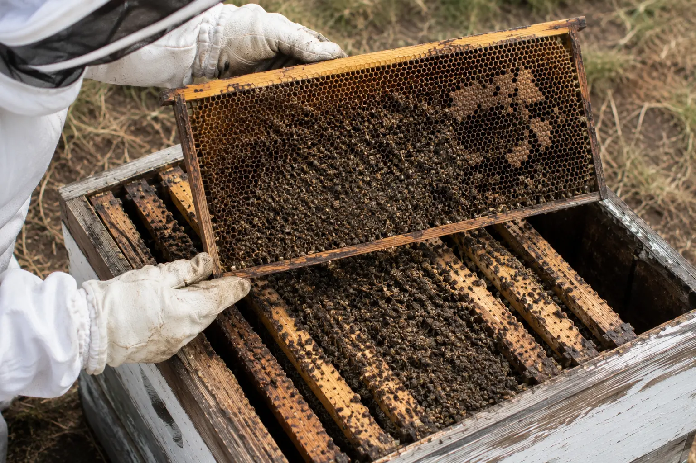
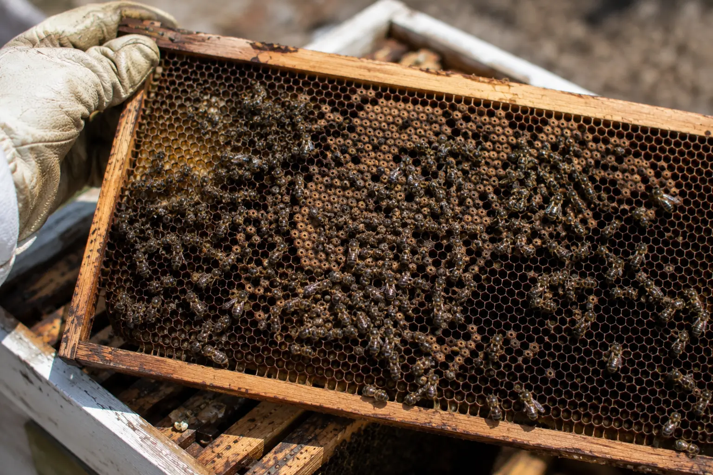
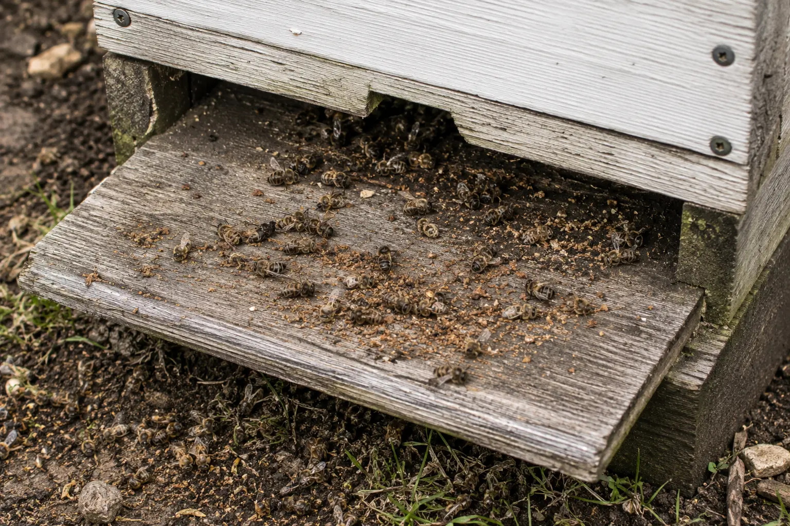

Colony loss
Why Did My Hive Die?
Last updated: 1 May 2026

Losing a colony is frustrating, but the hive usually leaves clues. By checking the bees, stores, brood, entrance and recent history, you can often work out the most likely cause and reduce the risk of it happening again.
Try not to decide the cause from one sign alone. A dead hive with no stores may suggest starvation, but a colony can also be weakened first by varroa, queen failure, robbing or disease. A hive with honey still present may still have died from isolation starvation if the cluster could not reach the food.
This guide is the broad starting point for colony loss. For a detailed frame-by-frame check, use the hive post-mortem analysis guide.
Start with these questions
Before clearing the hive, ask what the dead colony is showing you. Were most bees dead inside the hive, outside the entrance, or were there very few bees left? Were the bees clustered tightly, spread across frames, or dead with their heads inside cells?
Check whether food was present close to the cluster, not just somewhere in the hive. Look for signs of varroa, deformed wings, crawling bees, robbing, wasps, wax debris, damp, mould, brood disease or queen problems in your previous inspection notes.
Also think about timing. Winter and early spring losses often involve stores, cluster size and varroa-damaged winter bees. Summer losses may point more towards queen problems, poisoning, robbing, disease, extreme weakness or heavy mite pressure.
Most common reasons a hive dies
The most common causes include starvation, isolation starvation, varroa-related collapse, robbing, wasp pressure, pesticide or chemical exposure, queen failure, serious brood disease and weather stress. Often more than one factor is involved.
A useful approach is to separate immediate cause from underlying weakness. For example, robbing may finish off a colony, but the colony may have become vulnerable because it was queenless, had low stores or was already damaged by varroa.
Starvation

Starvation is likely when the hive is very light, stores are absent or nearly absent, and dead bees are found with their heads deep inside cells. This often means the bees were searching for the last available food.
Starvation can happen in winter, early spring, poor weather, a nectar gap or any time a small colony cannot maintain enough food. The key is whether the food was accessible to the bees when they needed it.
Read: Starvation in bees.
Isolation starvation
Bees can die even when food is still in the hive if the cluster cannot reach it during cold weather. This is known as isolation starvation and is common in winter and early spring.
During a post-mortem, check the relationship between the dead cluster and the stores. Food on a different frame, too far to the side, or above a cluster that could not move may not have been usable.
Read: Isolation starvation.
Varroa collapse
Varroa-related losses often follow a period of weakening, crawling bees, deformed wings, poor brood, or a colony that seems to disappear. The hive may contain very few bees, some stores, and signs that the colony dwindled before it finally failed.
Check your mite monitoring and treatment history carefully. A colony that looked acceptable in late summer can still fail later if winter bees were damaged by varroa and associated viruses.
Read: Varroa symptoms, varroa collapse signs and deformed wing virus.
Robbing, wasps or poisoning

Robbing can strip a weak colony quickly. Look for torn cappings, wax debris, fighting at the entrance, wasp activity and missing stores. Robbing is often a secondary problem that exploits a colony already too weak to defend itself.
A sudden pile of dead or dying bees, especially outside the hive, may suggest poisoning or acute chemical exposure. This is more concerning if several colonies are affected at once, if the bees are trembling or spinning, or if nearby spraying has taken place.
Read: Robbing behaviour in bees, wasps attacking beehives and pesticide poisoning in bees.
Queen failure or serious disease
A colony may dwindle if the queen fails, is lost, produces poor brood, becomes drone-laying, or is not replaced successfully. Your previous inspection notes are important here because a dead hive may not show the full history.
Serious brood disease also needs careful handling. If you find suspicious brood, sunken perforated cappings, ropy larval remains, abnormal smell or unusual larval breakdown, do not reuse equipment until you have taken advice.
Read: queenless colony guide, queen failing signs, American foulbrood and European foulbrood.
What the dead bees can tell you
Bees dead with their heads in cells are a strong starvation clue, especially if food is absent or not close to the cluster. A tight dead cluster can suggest starvation, isolation starvation or cold stress.
Very few bees left in the hive may suggest varroa collapse, queen failure, absconding, robbing or a colony that dwindled before death. Many dead bees outside the entrance can point towards poisoning, robbing, weather stress or disease.
Crawling bees seen before death can be linked with varroa, deformed wing virus, poisoning, starvation, chilling or general colony weakness.
What to record before clearing the hive
Take photos of the hive entrance, dead bees, brood frames, stores, floor debris and the position of the cluster. Record whether food was present and whether it was close enough for the bees to reach.
Write down recent varroa treatment and monitoring history, recent feeding, weather before the colony died, queen status at the last inspection, and any nearby spraying, robbing or wasp pressure.
These records help you avoid guessing and make it easier to improve management for the next season.
Do a proper post-mortem
Before cleaning or reusing equipment, work through the hive methodically. The position of the cluster, amount of stores, brood condition and entrance signs are all important.
If the colony died in winter, look closely at stores, cluster position, damp and varroa history. If it died during the active season, also consider queen failure, poisoning, robbing, wasps and brood disease.
Follow the full guide: Hive post-mortem analysis.
When to contact a bee inspector
Contact a bee inspector or the National Bee Unit if you suspect foulbrood, poisoning, unusual brood disease, or if you are unsure about a serious unexplained colony loss.
Do not move suspect frames, comb or equipment into another colony while you are unsure. Related guide: When to call a bee inspector.
How HiveTag can help
HiveTag records can make colony loss easier to understand because you can look back at inspection notes, feeding, stores, queen status, varroa checks, treatments and photos.
A clear timeline often shows whether the colony really died suddenly or whether warning signs were already present in earlier inspections.
Learn more: HiveTag.
Dead Hive With Honey FAQ
They may have died from isolation starvation if the cluster could not reach the food during cold weather.
No. Starvation is common, but varroa collapse, robbing, poisoning, queen failure, disease and weather stress can also kill colonies.
Only after you have assessed the likely cause. Do not reuse or move equipment if foulbrood or serious disease is suspected.
Check where the bees died and whether food was available close to the cluster. Then check brood, entrance signs, varroa history and recent events.